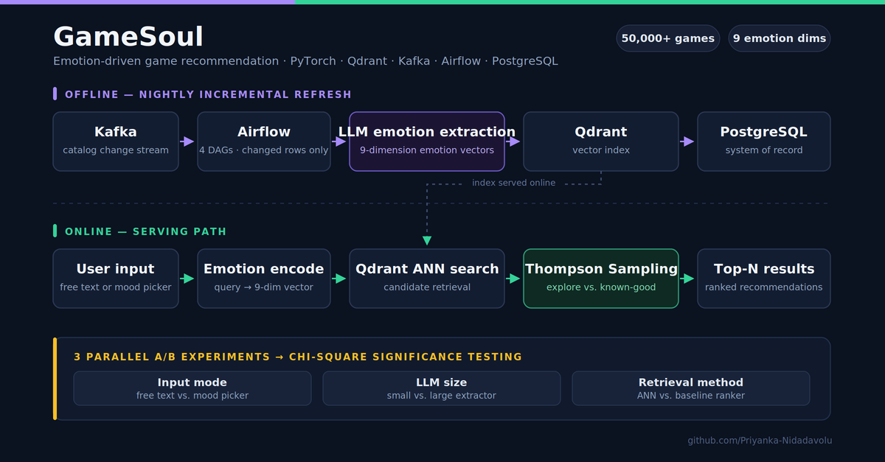

Genre is a bad proxy for what you actually want
Every storefront recommends games by genre, tag overlap, and what people who bought this also bought. None of that answers the question people are actually asking, which is closer to “I have three hours and I want to feel calm” or “I want something tense that I can finish tonight.” Two roguelikes with identical tags can be opposite experiences.
The gap is that emotional response is not in the metadata. It is in reviews, descriptions, and how people talk about a game after playing it - unstructured text that no tag taxonomy captures.
Key insight: the emotional signal already exists in review text. It does not need to be collected, only extracted - and once extracted into a fixed vector space, the recommendation problem becomes nearest-neighbour search over feelings instead of tags.
System Architecture
Two paths. An offline pipeline turns the game catalogue into emotion vectors and keeps them fresh; an online path turns a user’s query into the same vector space and serves ranked results. The two meet at the Qdrant index.
Emotion Extraction
An LLM reads game descriptions and review text and scores each title across 9 emotional dimensions, producing a fixed-length vector per game. Runs over the full 50,000+ title catalogue.
Qdrant ANN Retrieval
Emotion vectors are indexed in Qdrant for approximate nearest-neighbour search. A user query is encoded into the same 9-dimension space, so retrieval is a similarity lookup over feelings rather than a tag join.
Thompson Sampling Bandit
Retrieved candidates are served through a Thompson Sampling bandit that balances exploration against known-good picks, so the system keeps surfacing new titles instead of collapsing onto a small popular set.
Incremental Refresh
4 Airflow DAGs driven by Kafka change events run a nightly embedding refresh that reprocesses only changed rows, keeping re-embedding cost proportional to catalogue churn rather than catalogue size.
PostgreSQL System of Record
Postgres holds canonical game metadata and pipeline state. Qdrant is treated as a derived index that can be rebuilt from the system of record at any time.
Parallel A/B Experiments
Three experiments ran simultaneously - input mode, LLM size, and retrieval method - with chi-square significance testing selecting the production configuration rather than intuition.
Technologies Used
| Component | Tool & Purpose |
|---|---|
| Emotion Extraction | LLM scoring over descriptions and review text · 9-dimension output vector |
| Vector Store | Qdrant · approximate nearest-neighbour retrieval over emotion vectors |
| System of Record | PostgreSQL · canonical catalogue metadata and pipeline state |
| Orchestration | Apache Airflow · 4 DAGs driving nightly incremental refresh |
| Change Stream | Apache Kafka · catalogue change events feeding the refresh pipeline |
| Serving Policy | Thompson Sampling bandit · exploration vs. known-good candidates |
| Modeling | PyTorch · embedding and ranking components |
| Experimentation | 3 parallel A/B experiments · chi-square significance testing |
Impact
- Emotion vectors turn recommendation into nearest-neighbour search over feelings rather than tag overlap
- Incremental refresh keeps re-embedding cost proportional to catalogue churn, not catalogue size
- The bandit prevents the collapse onto popular titles that pure similarity ranking produces
- Configuration was chosen by significance testing, not by picking whichever variant looked better
What made it hard
Re-embedding cost at 50k scale
Re-running the LLM over the full catalogue nightly was not viable. Kafka change events let the Airflow DAGs reprocess only rows that actually changed, so cost tracks churn instead of catalogue size.
Similarity collapse
Pure nearest-neighbour ranking kept returning the same dense cluster of popular titles. The Thompson Sampling layer sits after retrieval specifically to keep exploration alive without discarding known-good candidates.
Three experiments at once
Running input mode, LLM size, and retrieval method concurrently risks confounding. Each was assigned independently and evaluated with chi-square testing rather than eyeballing the winner.
Keeping the index rebuildable
Treating Qdrant as a derived index rather than a store of truth meant every vector had to be reconstructible from PostgreSQL, which constrained how much state the pipeline was allowed to hold.
What I took away
- Retrieval quality and serving policy are separate problems. Fixing ranking did not fix diversity - that needed a bandit.
- A vector index should always be derivable from a system of record. The moment it holds unique state, you cannot rebuild it after a bad batch.
- Incremental beats batch as soon as the expensive step is a model call rather than a database read.
- Running experiments in parallel is worth the design overhead - sequential A/B on a class project timeline means testing one thing.